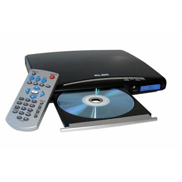

El primer disco duro, aparecido en 1956, fue el Ramac I, presentado con la computadora IBM 350: pesaba una tonelada y su capacidad era de 5 MB. ... El cabezal magnético codificaba información al magnetizar diminutas secciones del disco duro, empleando un código binario de «ceros» y «unos».
TIPOS DE DISCOS DUROS
Las clases de discos duros que existen se conocen como: disco duro SAS, el disco duro SCSI, el disco duro IDE, ATA, PATA; así mismo como los discos duros SATA y SATA 2. Y aquellos dispositivos externos como las memorias flash, memorias sd, entre otros. En la actualidad existen una gran cantidad de discos duros para computadora, mini computadoras, tablets, celulares, etc. No obstante los hay que constan de diversos elementos, medidas y capacidades. Esto incluye los discos identificados como memorias externas como las usb, micros sd.
SAS
Estos discos son muy solicitados para el empleo en servidores, es posible conectarlos hasta con 6 ó 7 metros de distancia y de ahí en adelante cubrir hasta 24 computadoras.
SCSI
Estos discos poseen una interfaz muy pequeña y exige de un controlador para que opere
IDE, ATA y PATA
Cada clase de disco duro representa o quiere decir: IDE. Es la abreviatura de componente electrónico integrado. ATA. Es la abreviatura de tecnología avanzada de contacto. PATA. Es la abreviatura de tecnología paralela avanzada.
SATA
Esta sigla significa tecnología avanzada de contacto. Y se distingue por funcionar con una velocidad cercana a los 150 megabytes por segundo.
SATA 2
Este dispositivo dispone de mejor capacidad debido a que funciona hasta con 300 megabytes por segundo, lo que representa que su tiempo de respuesta es muy bueno. DISCO DURO SATA 2 se diferencia en comparación con el SATA es que realiza sus actividades a 300Megabytes/segundo.
Discos duros para computadora de escritorio SATA
Estas clases de discos duros, pertenecen a los de conexión SATA, y son de los modelos de discos duros que disponen las computadoras modernas. Se destacan por el tipo de conexión, gracias a que son un bus serie, lo cual es útil para la trasmisión de información. Son muy ágiles.
Existen tres clases:
SATA – 1: Alcanza una velocidad de hasta 150 Mb de transferencia.
SATA – 2: Alcanza una velocidad de hasta 300 Mb de transferencia.
SATA – 3: Alcanza una velocidad de hasta 600 Mb de transferencia, por su rendimiento es el más solicitado además de contar con una gran capacidad al mismo tiempo su tamaño es pequeño, con relación a los demás.
HISTORIA DE LAS UNIDADES CD
Fue en octubre de 1982 cuando Sony y Philips comenzaron a comercializar el CD. En el año 1984 salieron al mundo de la informática, permitiendo almacenar hasta 650 MB (74 min. de CD-A) y, a finales de los 90', hasta 700 MB (80 min. de CD-A).
HISTORIA DE DVD

El estándar del DVD surgió en 1995 Consorcio (DVD Consortium). La unidad de DVD es el dispositivo que hace referencia a la multitud de maneras en las que se almacenan los datos: DVD-ROM (dispositivo de lectura únicamente), DVD-R y DVD+R DVD-RW y DVD+RW (permiten grabar y luego borrar).